windows 10撥接斷線自動再連線方法
這問題也不是只有Windows 10才會遇到的，
如果你的網路是動態IP，而ISP業者又會過兩三天自動中斷你網路一次，
變成你還要兩三天再手動撥接上網，真的很麻煩，當網路突然不通時，
可以再自動撥接上去嗎？
一、20226觸發事件
對寫指令碼比較不熟的人可以利用觸發事件來處理，
可以利用 20226 斷線觸發事件來判斷網路是否突然被中斷；
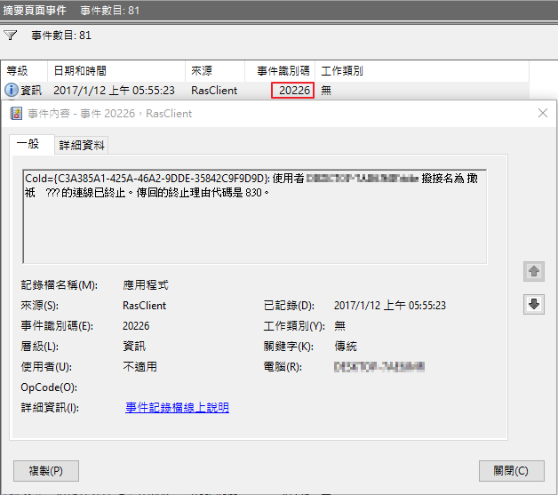
不過保險的作法應該是寫指令碼(Windows Script Host)，定期檢查對外連線的狀況(ping)，一旦發現斷線就自動重新連線。
利用工作排程器來對20226觸發事件做處理具體做法為
1、使用工作排程器，建立一個工作
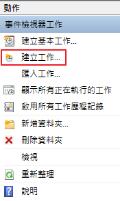
2、於「一般」頁籤填入名稱(也可自訂)，其他設定參考下圖
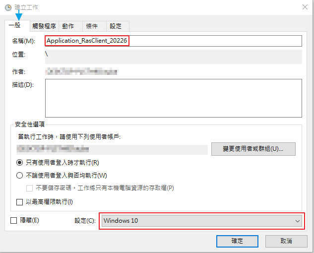
3、新增觸發程序
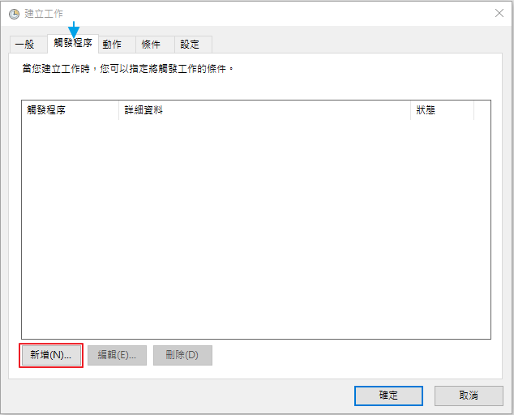
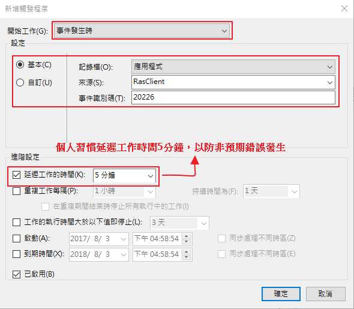
4、當事件被觸發時應該指定有何動作
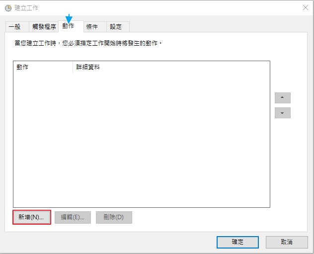
網路被中斷時當然要再自動撥接上去。
而我先前已經寫好了撥接上網的指令碼
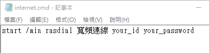
語法為 rasdial [連線名稱] [帳號] [密碼]。
連線名稱的找尋請看下圖
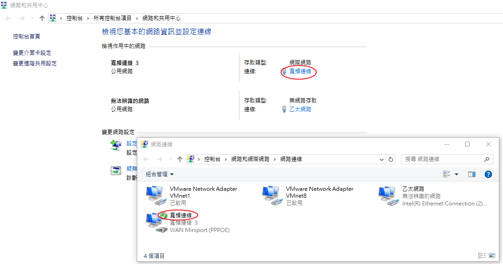
接下來只要將動作指到這個指定碼就行了
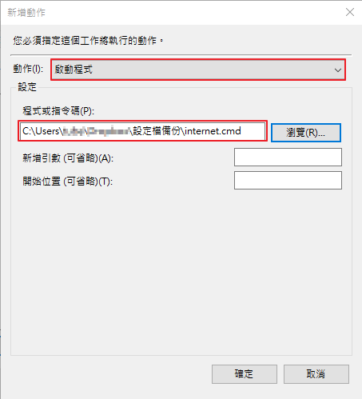
5、其他頁籤設定，請根據自已需求作參考
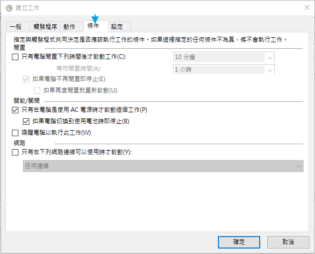
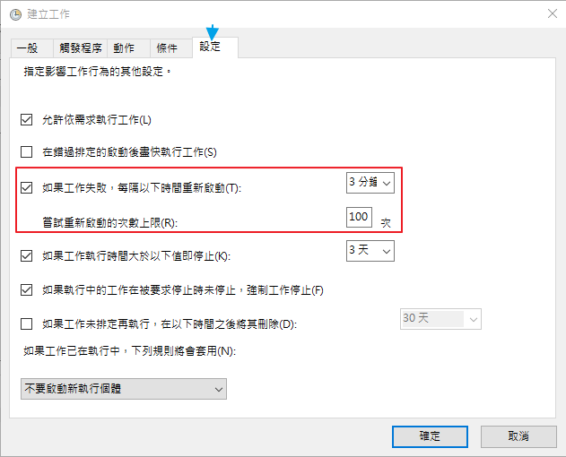
二、20227觸發事件
後來我還幾次遇到就算重撥也會發生「傳回的失敗錯誤碼是 651」問題，其觸發事件為20227，
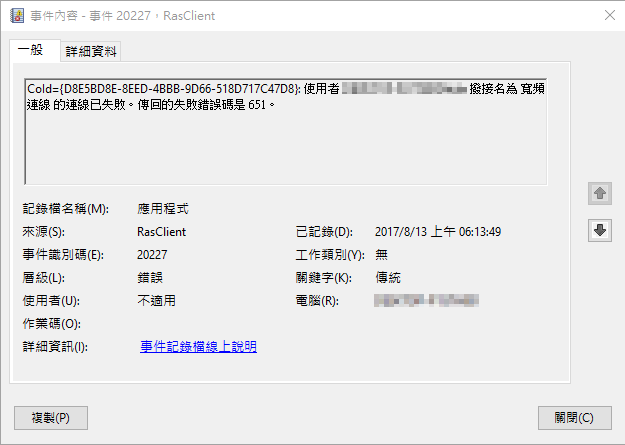
我遇到的情況原因是我的網卡莫名其妙被停用了，
因此解決的方法為，當20227事件被觸發時，就要下指令把網卡再啟用，
也是利用觸發事件來處理，實際操作步驟如下
1、使用工作排程器，建立一個工作
2、於「一般」頁籤填入名稱「Application_RasClient_20227」(也可自訂)，其他設定參考下圖
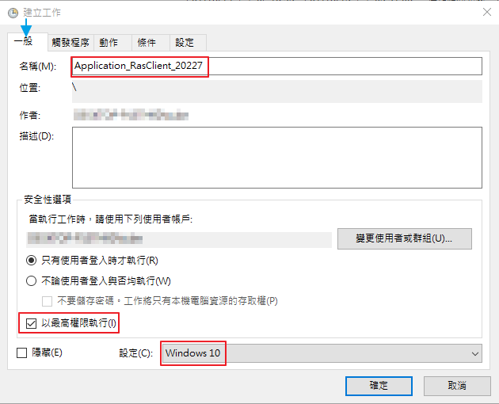
由於被指定執行的程式需要「系統管理員」權限，
所以記得請勾選「以最高權限執行」
3、新增觸發程序
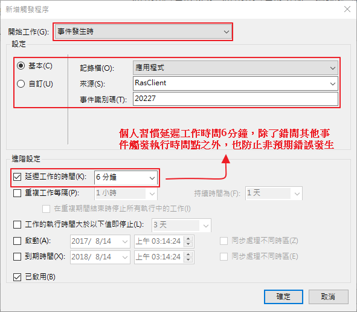
4、當事件被觸發時應該指定有何動作
我們指定的動作是再次啟用該網卡，所準備的指令碼為
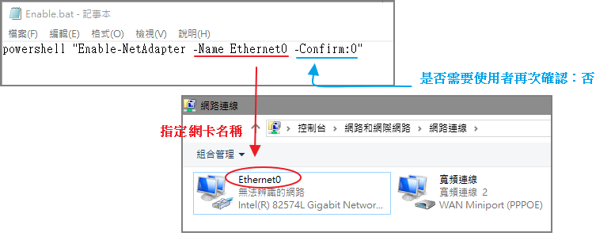
有時候可能需要先停用再啟用該網卡，再附上停用的指令：
powershell "Disable-NetAdapter -Name Ethernet0 -Confirm:0"
我也看過有人利用netsh來做，其結果也是一樣的，啟用網卡的指令碼為
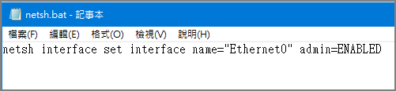
有時候可能需要先停用再啟用該網卡，再附上停用的指令：
netsh interface set interface name="Ethernet0" admin=DISABLED
接下來只要將動作指到這個指定碼就行了
5、其他頁籤設定，請根據自已需求作參考
參考資料：